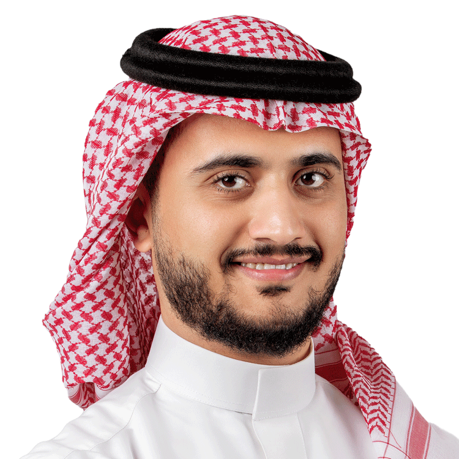

01
مصمم جرافيكGraphic Designer
تصميم المرئيات والهويات والمطبوعات لمشاريع الشركة.Visual assets, identity work and print for company projects.
مصمم محترف يعمل على الهوية البصرية والعروض التقديمية والموشن جرافيك والتصوير الفوتوغرافي وإنتاج الفيديو. خبرة تزيد على عشر سنوات في تحويل النصوص والبيانات إلى تصاميم بصرية واضحة ومؤثرة.
A professional designer working across visual identity, presentations, motion graphics, photography and video production. Over ten years turning text and data into clear, effective visual work.

شركة كايزن لخدمات الأعمال — المملكة العربية السعودية
Kaizen Business Services — Saudi Arabia
أضف صور أعمالك إلى مجلد uploads/ ثم سجّلها في مصفوفة GALLERY أسفل الملف — وستظهر هنا مع نافذة عرض وتصفية بالتصنيف.
Drop your images into uploads/ and register them in the GALLERY array at the bottom of this file — they appear here with a lightbox and category filters.
مفتوح للمشاريع والتعاون في الهوية البصرية والعروض التقديمية والموشن جرافيك والتصوير.
Open to projects and collaboration in visual identity, presentations, motion graphics and photography.